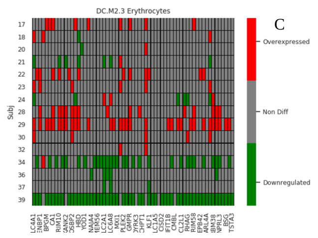

Pipelines, databases, statistical methods, and international research collaborations.
A modular, containerized pipeline for metabarcoding and amplicon sequencing data analysis. Supports Nextflow, Docker, and Singularity for reproducible, scalable workflows across HPC and cloud environments.
View on GitHubA comprehensive rRNA gene reference database for the identification of all eukaryotic taxa. Enables high-precision environmental DNA classification across microbiome and ecological studies.
Visit Database
A novel statistical framework for differential expression analysis in RNA-seq data, designed to improve robustness and reduce false discovery rates in multi-group comparisons with complex experimental designs.
The Traversing European Coastlines project — an international biodiversity sampling initiative spanning European coastlines to characterize marine and coastal microbial and eukaryotic communities via metabarcoding.
Systematic benchmarking of chimera detection algorithms for PacBio and Oxford Nanopore long-read amplicon data, quantifying error rates, sensitivity, and specificity across diverse marker regions and community complexities.
PublicationIntegrative single-cell analysis of cancer samples using 10X Chromium scRNA-seq and CROP-seq libraries. Applied ML models (scVI, TensorFlow, PyTorch) for clonal evolution, CNV detection, and gene set enrichment.